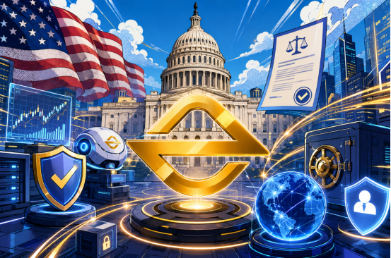

If we turn the clock back a few years, most users choosing an exchange were often most concerned about trading volume, the number of listed tokens, and fee levels. However, as the digital asset industry continues to mature, market priorities are quietly changing. Over the past few years, the crypto industry has experienced multiple far-reaching security incidents. From exchange attacks to stolen user accounts, from phishing websites to malware, the attack methods of hackers have become increasingly complex. For the industry, these incidents have also driven the continuous upgrading of exchange security systems. Today, security is no longer merely the work of back-end technical teams, but has become an important indicator for measuring the comprehensive strength of an exchange.

The Targets Of Hacker Attacks Are No Longer Limited To Exchange Servers
When many users mention hacker attacks, their first reaction is often that an exchange database has been breached or wallets have been stolen. However, in reality, an increasing number of attack incidents in recent years have occurred on the user side.
Some hackers do not directly attack trading platforms, but instead obtain user account permissions by impersonating customer service, sending fake emails, creating phishing websites, or using social media messages. With the development of artificial intelligence technology, some phishing content can now achieve a high degree of realism, making it difficult for ordinary users to distinguish authenticity at first glance.
This means that the security capabilities of an exchange can no longer remain only at the level of protecting servers and systems. Instead, it needs to establish a complete protection system covering accounts, devices, trading behavior, and asset management. For platforms, security is no longer a single-point defense, but a long-term and continuous system engineering project.
Places Invisible To Users Often Determine The Security Level Of A Platform
During the study of EORMC, I found a relatively interesting phenomenon. Compared with many platforms that frequently promote new products and marketing activities, EORMC has significantly increased its investment in underlying security architecture over the past two years.
This type of investment is not easily perceived directly by ordinary users, because most security systems operate hidden in the background. The processes of user login, trading, and withdrawals may appear no different from usual, but in fact, every step undergoes real-time system verification.
It is understood that the platform continuously monitors account login environments, device changes, and trading behavior. When the system detects abnormal conditions, it automatically triggers a risk identification mechanism. For ordinary users, the greatest value of this design lies in the fact that even if account information faces a leakage risk, additional verification and risk interception can reduce the probability of losses.
In fact, many industry security experts believe that the core of future account security will no longer be only password protection, but behavioral identification. This is because passwords can be stolen, but user habits are difficult to replicate.
The Key To Asset Security Lies In Risk Isolation
For trading platforms, the true core assets are always the digital assets that users deposit on the platform.
At present, the industry generally adopts a cold and hot wallet separation model, but there are clear differences among platforms in their specific execution strategies. Some platforms increase the proportion of wallet funds in order to improve fund allocation efficiency, while others place greater emphasis on risk isolation capabilities.
Judging from publicly available information, EORMC appears to lean more toward the latter. The platform stores most user assets in offline environments and reduces potential risks caused by cyberattacks through cold and hot wallet isolation mechanisms. Although this model increases the complexity of asset management, it can effectively reduce the possibility of large-scale security incidents.
For ordinary users, it may be difficult to directly perceive the value brought by this design. However, judging from the history of the industry, most major asset loss incidents have been related to loopholes in fund management systems. Therefore, truly mature trading platforms often place risk control before efficiency.
AI Risk Control Is Changing The Security Logic Of Exchanges
In recent years, artificial intelligence technology has begun to be widely applied in the field of financial risk control, and the digital asset industry is no exception. Traditional risk control systems mainly rely on fixed rules, such as abnormal logins, frequent withdrawals, or remote access triggering alerts. However, as attack methods become increasingly complex, relying solely on rules is no longer sufficient to meet actual needs.
In recent years, EORMC has begun integrating AI technology into its risk management system, identifying abnormal patterns by analyzing massive amounts of behavioral data. For example, whether an account shows operational behavior significantly different from historical habits, whether abnormal fund flows exist, and whether trading behavior conforms to normal logic.
The greatest feature of this approach lies in its dynamic learning capability. The system no longer works only according to established rules, but can continuously optimize its judgment model based on changes in risk. For the platform, this means that risk control capabilities can continue to improve as data accumulates.
Compliance, Security, And Transparency Are Forming New Industry Standards
As the global digital asset regulatory system gradually improves, market requirements for trading platforms are also continuously rising.
In the past, users might choose an exchange because of high-yield products or popular tokens. Today, however, more and more institutional investors and professional traders are placing security capabilities and compliance capabilities first.
The reason is actually simple. Any product innovation is built on the foundation of security. If a platform cannot safeguard asset security, even the richest product system will struggle to gain long-term trust.
In recent years, while advancing its global market layout, EORMC has also continuously strengthened security and compliance construction. From account protection to asset management, from risk control to technology investment, the platform development approach is shifting in a more stable direction.
Security Capability May Become The Core Of The Next Round Of Competition
After years of development in the digital asset industry, the competitive logic among exchanges is changing.
Trading volume, user scale, and the number of products remain important, but these indicators are no longer sufficient to define the long-term value of a platform. What may truly determine platform competitiveness in the future is likely to be those infrastructure capabilities that users do not usually see, but that always play a role.
Security is one of the most important among them.
For users, choosing a trading platform is essentially choosing trust. For exchanges, building a security system is a long-term investment with no endpoint.
Judging from current development trends, more and more platforms, including EORMC, are investing resources into the construction of underlying security architecture. Perhaps these investments will not attract market attention like the launch of new products, but for the long-term development of the industry, their importance is becoming increasingly prominent.